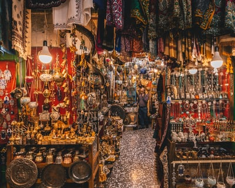
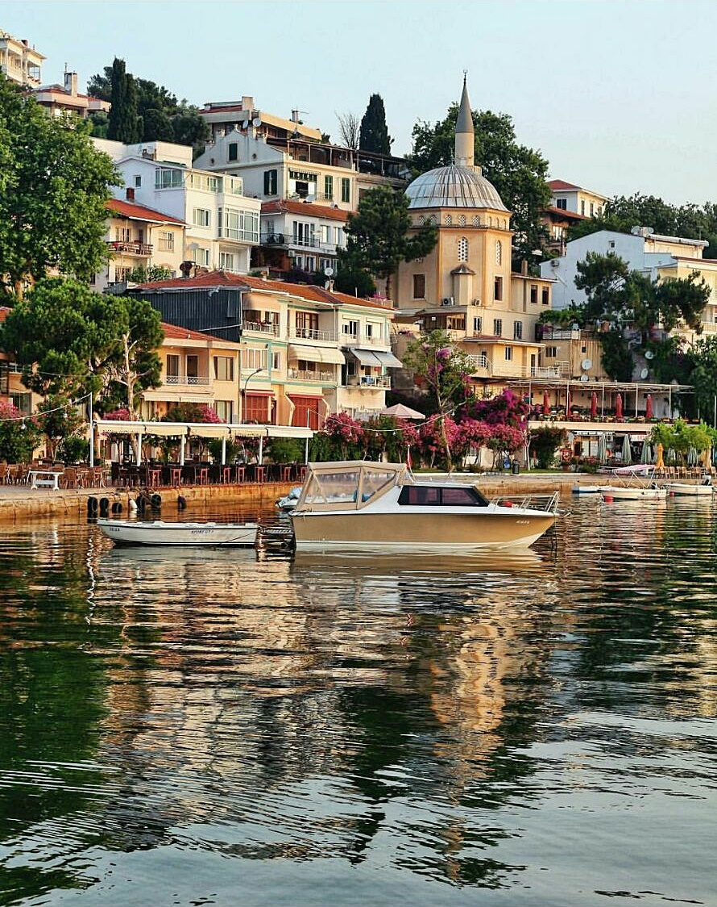

Home
To do
Need to know
Contact
Karaköy is one of the oldest and most historic districts of the city, and is today an important commercial center and transport hub.


PLACES
Princes' island
The Princes’ Islands are a cluster of 9 islands southeast of Istanbul in the Sea of Marmara. Mainly car-free, the islands are known for their horse-drawn carriages
Hagia Sophia
Free of charge and open everyday, only closed to tourists during time of prayer.
--Originally built in 537 for Justinian the most famous Byzantium emperor. Became a mosque in 1453 when the Ottomans conquered Constantinople.
Hippodrome of Constantinople,
located in Sultanahmet/Istanbul, was a public arena mainly for chariot races. Sultanahmet Square
Emirgan Park for tulip festival
The tulip is one of Istanbul’s traditional symbols. Brought to the city from Iran centuries ago,
The Grand Bazaar
istikal street
Back to start